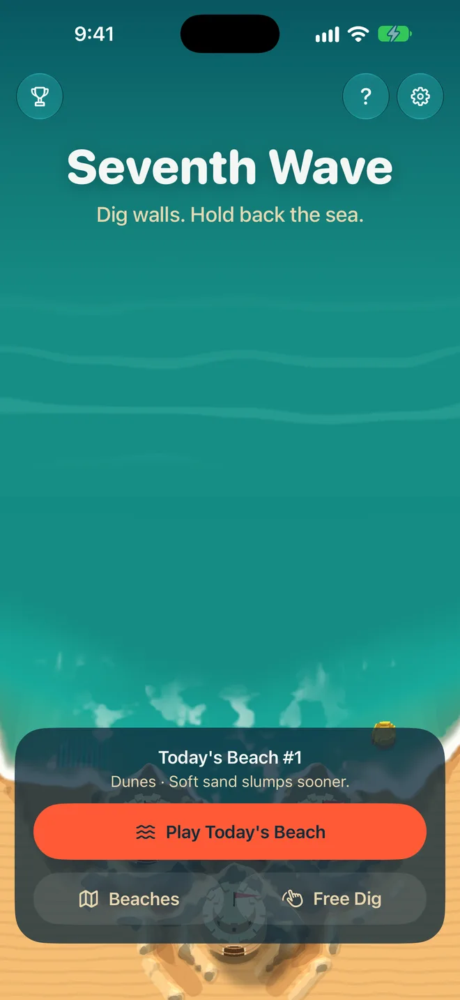
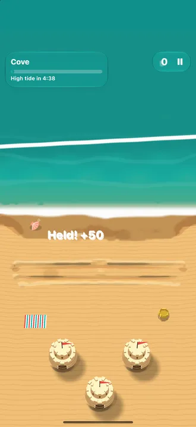
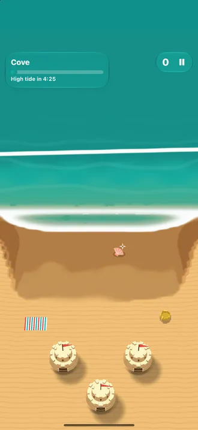
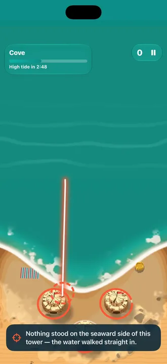
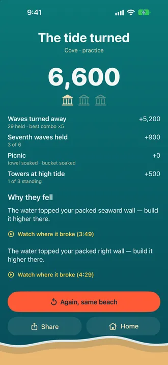

A sandcastle game for iPhone and iPad
Dig walls. Hold back the sea.
Dig, pack and hold the line. A sandcastle, a rising tide, and every seventh wave is the big one.
One price (US$4.99): no ads, no in-app purchases, no account. iPhone and iPad, iOS 18 or later.

How it plays
Dig
Drag a finger across the sand. It digs a trench and throws up a wall on each side. Every grain you move comes from somewhere, so every wall leaves a moat.
Pack
Rest a finger still on a wall and the sand packs down and darkens. Packed sand washes away much more slowly.
Hold
Waves come in sets, and a line on the water shows the size and angle of the next one. Every seventh wave is the big one. Reach high tide with your towers standing.




What's in it
- Today's Beach. One new beach each day, the same for everyone.
- Four beaches. Cove, Point, Dunes and Breakwater, each with its own swell.
- Spring Tide. The same beaches with a higher tide and bigger waves.
- Free Dig. No clock: just sand and water.
- About five minutes a run. One tap puts you back on the same beach.
- Built to be usable. Works with VoiceOver, Reduce Motion and Differentiate Without Colour.
The sea is simulated: water runs downhill, finds the lowest spot in your wall and spills through it. When a tower falls, a short replay traces the route the water took.
Seventh Wave collects no data. Read the privacy policy, or get help.